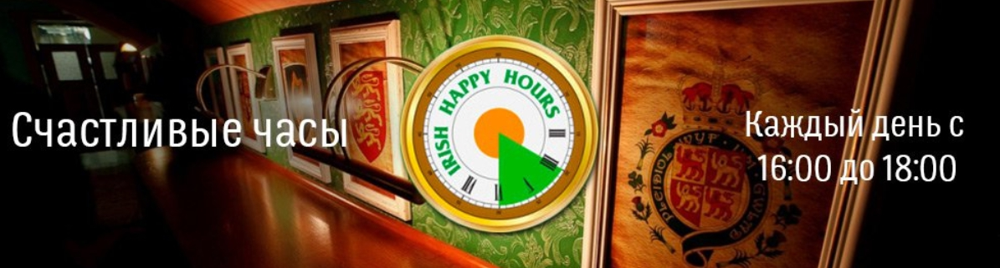
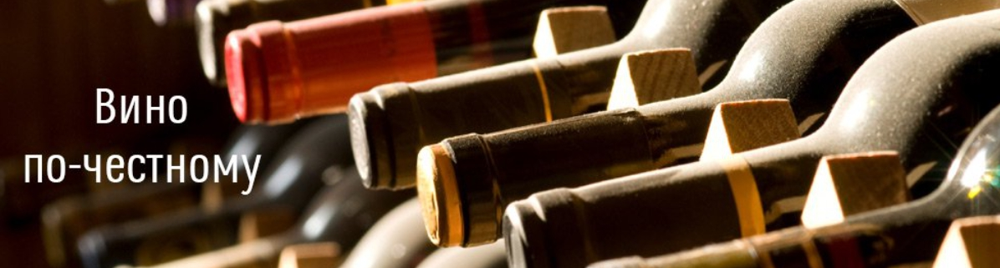
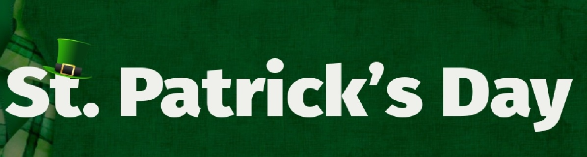

Два часа счастья в Шамбале! Каждый день с 16:00 до 18:00 к пинте пива — шот виски в подарок

«Шамбала» — это ваша собственная Сказачная страна, которую вы открываете каждый раз заново. Атмосфера нашего паба способна создать то особое настроение, которое заставляет возвращаться сюда вновь и вновь.
Новая акция — «Счастливые часы» — предназначена для всех, кто успел стать истинным ценителем дружелюбной атмосферы, неизменно внимательного обслуживания и всевозможных напитков.
Ежедневно в нашем пабе с 16:00 до 18:00 к каждой пинте пива вы получаете подарок: шот виски.
«Счастливые часы» — это время, которое мы дарим вам от всей души!
Вино по-честному

Смываем грехи. В нашем рестопабе вино бутылками по закупочной цене
Вино по-честному — это наценка всего 300 рублей на бутылку!
В любое время!
Теперь ценителям пива и крепких ячменных напитков можно смело приводить к нам друзей-винолюбов. Или самим попробовать в пабе что-то новое.
Мы сформировали винный лист в соответствии с пожеланиями наших гостей. В нём всё самое важное: шампанское, игристое вино, белое вино, красное вино, розовое и даже плодовое вино. Всё это мы предлагаем с минимальной наценкой — новые впечатления будут стоить вам примерно столько же, сколько две пинты пива.
День Святого Патрика

Приглашаем c размахом отметить День Святого Патрика. Этот праздник не только ирландского святого, но и ирландской души! Обещаем бурное веселье и отличную атмосферу, а в отдельных точках будут ведущие, диджеи и отличные конкурсы!
День Святого Патрика с нетерпением ждут не только поклонники ирландской культуры, но и просто любители отлично провести время. Бронируйте места и готовьтесь хотя бы на один вечер перевоплотиться
в безумного ирландца!